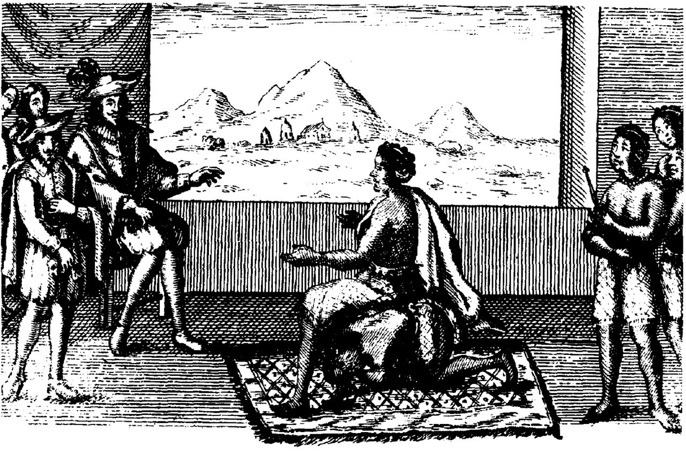
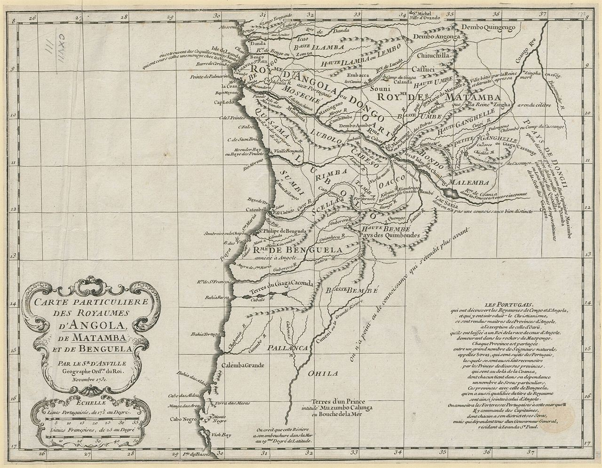
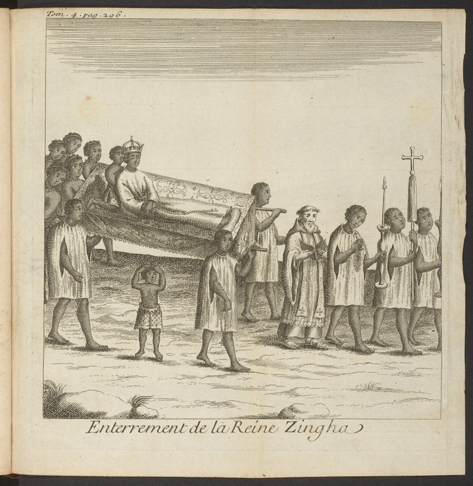

In 1622 a princess of Ndongo entered the Portuguese governor's hall in Luanda, found no seat set for her — and, the story goes, had a servant kneel so that she could meet the governor eye to eye. For the next forty years Njinga Mbande fought, negotiated and outlasted the empire that was trying to swallow her homeland.
Njinga Mbande is one of the great figures of African history: queen of Ndongo and later of Matamba, in the land the Portuguese would call Angola. She worked as a diplomat, ruled as a monarch, commanded armies and made alliances with European powers — for four decades holding her own against the largest empire of the age. This is her story, told from what the sources actually support.
Njinga was born around 1583, into the royal court of Ndongo in the highlands of west-central Africa. Ndongo was ruled by the ngola — a title the Portuguese turned into the place-name Angola — and its people, the Mbundu, had built a powerful state on farming, iron and the trade routes that reached the Atlantic coast.
Portuguese traders had held the coastal settlement of Luanda since 1576, and their appetite was growing: not for gold alone but for people. Captives were shipped from this coast to the plantations of Brazil and São Tomé, and the demand for slaves reshaped the politics of the whole region. Coastal and inland rulers alike were pulled into a trade that enriched some, enriched the Portuguese most, and destroyed countless lives.
Njinga grew up inside this world of court intrigue and foreign pressure. From her father, King Kiluanji, and her mother Kengela ka Nkombe, she is said to have learned diplomacy, hunting and arms — the training of a royal heir. She would need all of it.
Note on the portraits: the most familiar images of Njinga were made in Europe by engravers who never met her, often decades after her death. They tell us more about how Europeans imagined her than about her face.

After her father's death (1617) and her brother Mbandi's accession, Njinga was sent as ambassador to the Portuguese governor of Angola, João Correia de Sousa, in Luanda. It was a remarkable role for a woman in a European court of the day — and she carried it off. The negotiations produced a treaty in 1622 in which Portugal recognised Ndongo's sovereignty, agreed to curb abuses by Portuguese officials and returned some territory; in return Njinga accepted Portuguese trade and allowed missionaries.
To seal the alliance she was baptised in Luanda, taking the Portuguese name Dona Ana de Sousa. The baptism was a political act as much as anything else — a ruler using the symbols of the foreign power without surrendering her own authority.
Her most famous moment in that embassy is the chair. Arriving to meet the governor, she found only one seat — his — and no place for her; so, the story goes, she had one of her attendants kneel down and sat upon her, meeting the governor at his own height. The scene captures her perfectly. But it is also a caution.
The chair-and-servant scene is told as a solid historical fact, and often repeated as proof of her pride and cunning.
The story does not appear in the earliest records; it comes from later European accounts. What is documented is substance: a skilled diplomat who won real concessions for her kingdom.
When Mbandi died in 1624, Njinga claimed power in Ndongo — first as regent, then as ruler in her own right. Portugal refused to accept a queen it could not control and backed rival claimants instead. The result was war. By 1626 a Portuguese army had driven her from Ndongo and installed its own client on the throne.
Njinga did not surrender. She withdrew east and, in one of the boldest turns of her career, allied with the Imbangala — wandering warrior companies feared across the region — and rebuilt her power in the kingdom of Matamba. From about 1631 she ruled there as queen, gathering refugees from Portuguese raids, controlling the trade routes, and turning Matamba into a state strong enough to challenge the coast.
For Portugal she became a permanent problem: a ruler who could not be bought, replaced or killed, and who now sat across the very routes on which its inland trade depended.

The wider world handed her a weapon. In 1641 the Dutch captured Luanda from Portugal, and Njinga did what any shrewd ruler would: she became their ally against a common enemy. With Dutch support and her own seasoned forces she won a notable victory at Ngoleme in 1644.
Fortune is not loyal. In 1646 she was defeated at Kombi and briefly captured, then released through an exchange of prisoners. In 1648 a Portuguese fleet retook Luanda from the Dutch, and Njinga was again alone — waging a long war of movement and attrition from Matamba that the colony could never finish.
European chroniclers painted her as a monstrous, bloodthirsty tyrant — even a cannibal — the better to justify the war against her.
These portrayals come almost entirely from hostile, interested sources. The documented Njinga was a pragmatic wartime ruler of a slave-trading, slave-defending kingdom — brutal in an age of brutality, but no more so than the empire that called her savage.
The wars were fought over an economy built on enslaved human beings. The Atlantic trade that the Portuguese drove into this coast — ships like the Brookes shown above — is the reason the struggle for Ndongo and Matamba mattered so much to Lisbon.
By the 1650s Njinga had outlasted every governor sent to break her, and she turned war into leverage. Through years of negotiation she reached a peace with Portugal in 1657 — by then she was in her seventies — that recognised her as queen of Matamba and ended decades of open conflict. She welcomed Christian missionaries to her court while keeping her own authority and the loyalties of her people.
She ruled on, rebuilding her capital and her state, until her death on 17 December 1663, aged about eighty. She had held power, in one form or another, for close to forty years — against one of the most formidable empires in the world.
Her legacy is a whole continent's. Njinga is honoured in Angola and across the African diaspora as a symbol of resistance and sovereignty, remembered in statues, in books and in the long argument over who gets to write Africa's story. She is proof — like Great Zimbabwe and like Mansa Musa — that this history is not a footnote to Europe's. It is its own.
Diplomat at twenty-two, warrior-queen for forty years, Njinga Mbande held two kingdoms against the Portuguese empire and died a sovereign — the ruler they could neither defeat nor erase.
Njinga Mbande is born into the royal court of the Mbundu kingdom of Ndongo.
King Kiluanji dies; her brother Mbandi takes the throne amid growing Portuguese pressure.
Njinga negotiates a treaty with Governor Correia de Sousa and is baptised Dona Ana de Sousa.
Mbandi dies; Njinga becomes ruler of Ndongo, resisting Portuguese interference.
A Portuguese invasion forces her out; she turns east to rebuild her power.
Allied with the Imbangala, she establishes herself as ruler of Matamba.
Portugal's rivals seize the coast, opening a new alliance for Njinga.
Njinga's forces defeat a Portuguese army with Dutch support.
She is defeated and briefly captured, then released in a prisoner exchange.
The Dutch are expelled; Njinga resumes a long war from Matamba.
A treaty recognises her as queen of Matamba and ends the open war.
Njinga dies in Matamba, aged about eighty, still queen of her own kingdom.
Dates and events follow the documentary record and modern scholarship. Colourful details that survive only in later or hostile accounts — the chair, the “cannibal queen†— are labelled as such, because how a ruler is remembered is part of the history too.